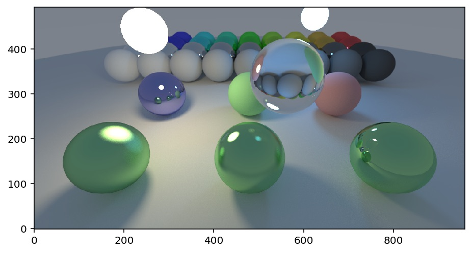

Porting a Toy Path Tracer to Swift
I ported a toy path tracer to Swift.
Some performance numbers:
| Environment | Mrays/s |
|---|---|
| Colab, effectively single threaded | 3 |
| iPhone 11 Pro Max | 18 |
| iPad Pro 12.9" 2018 | 21 |
| iMac Pro 2017 18-core | 96 |
The hardest part of the port was reducing contention between threads. I had to replicate the tracing object (which contains the scene data) per thread in order to avoid serializing on ARC retain/release code.
Swift currently has no way to share an immutable object graph across multiple threads without incurring ARC overhead every time any object in that graph is accessed.
Perhaps when Swift implements some form of the Ownership Manifesto this will be fixed.
